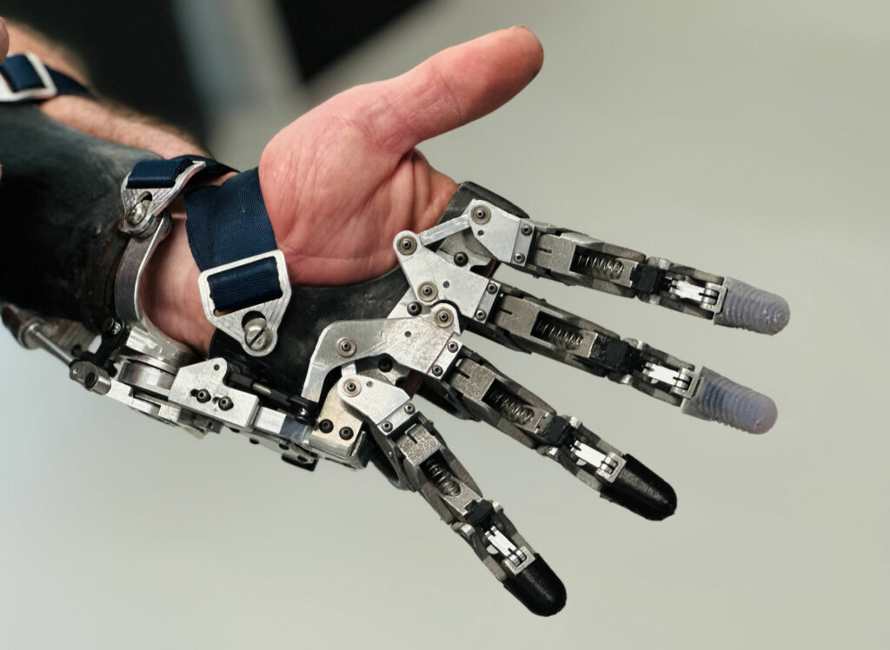
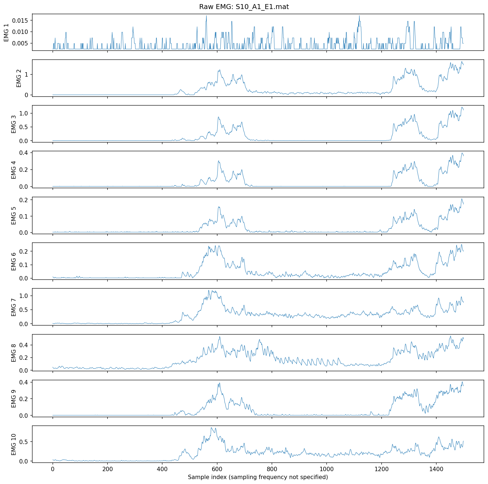
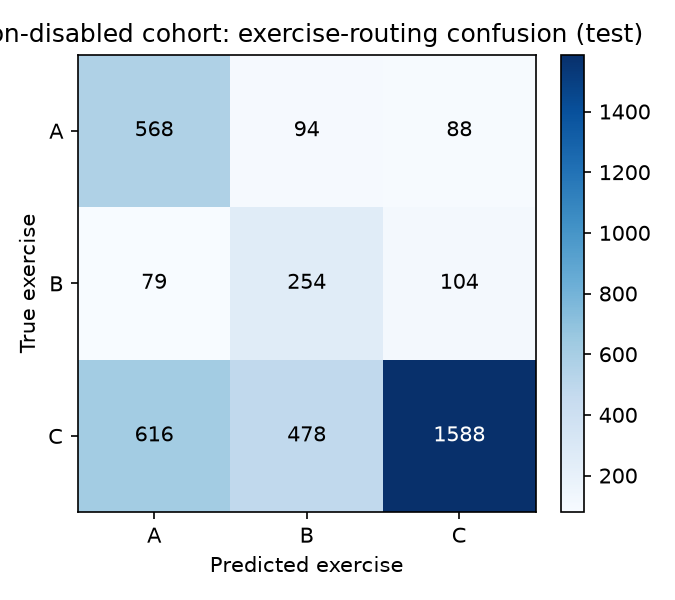
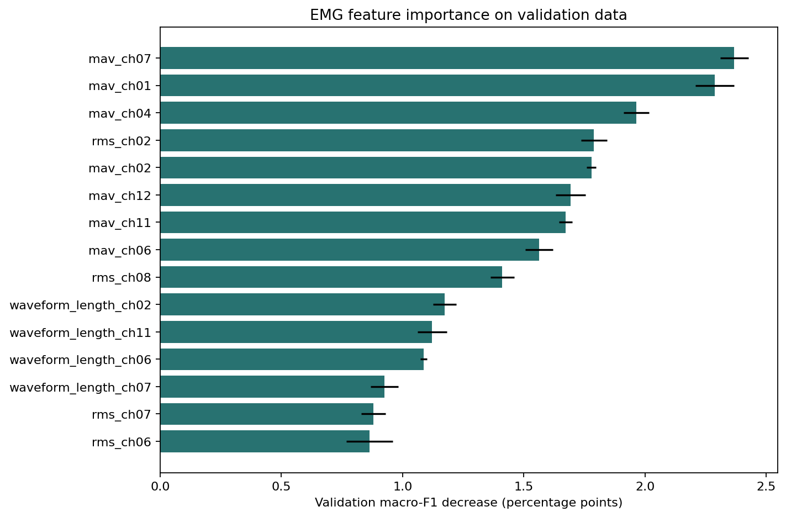

NINAPRO · RESPONSIBLE AI STUDY
A NinaPro-based analysis of movement classification, fairness and clinical implications

01 / WHY THIS MATTERS
ACCURACY IS NECESSARY · NOT SUFFICIENTBiological signals are complex. A model may learn population or sensor shortcuts alongside movement information.
02 / DATA ANALYSIS
NINAPRO IS MULTIMODAL · NOT ONE UNIFORM COHORTDATA SOURCE · NinaPro overview · DB1 · DB3 · DB8 · DB10 / MeganePro
03 / MODEL OVERVIEW
THREE MODELS → RESPONSIBLE EVALUATIONCan a model distinguish the instructed movements?
Hierarchical frequency MLP · glove signalCompare A-D, actions, channels, and error patterns.
Analytical view across the movement classifiersExplore whether signal features associate with group labels.
Logistic regression · subject-grouped folds · not diagnosis04 / DATA + MODEL PIPELINE
REPRODUCIBILITY · LEAKAGE CONTROL · EVIDENCE


05 / FAIRNESS ANALYSIS
06 / ERROR ANALYSIS
ERROR SHAPE IS MORE USEFUL THAN ERROR COUNT07 / FEATURE IMPORTANCE
PREDICTION → EVIDENCE08 / COUNTERFACTUAL ANALYSIS
LOCAL SENSITIVITY09 / CAUSAL ANALYSIS
PREDICTION DOES NOT PROVE CAUSATION10 / CLINICAL INSIGHTS
TRANSLATE ANALYSIS INTO A DECISION11 / MITIGATIONS
FROM RISK TO CONTROL12 / POLICY IMPLICATIONS
A BALANCED DEPLOYMENT VIEW13 / CONSEQUENCES + RISK
THE FAILURE CHAIN · AND THE RAI INTERRUPT14 / CONCLUSION
The long-term objective is a reliable, interpretable, personalized component of future prosthetic systems—not simply a model that recognizes movement.